Django 可以用LoginRequiredMixin和PermissionRequiredMixin给类视图添加认证和权限，DRF 做了高级封装，提供了更简洁的实现方式。我们通过继续学习官网教程来进行了解。
更新 model
首先修改Snippet模型，添加 2 个字段：owner，存储 snippet 创建者，highlighted，存储高亮 HTML。同时重写save方法，在同步数据库的时候，使用pygments包把code格式化后存到highlighted字段。修改后的snippets/models.py完整代码如下：
from django.db import models
from pygments.lexers import get_all_lexers
from pygments.styles import get_all_styles
from pygments.lexers import get_lexer_by_name
from pygments.formatters.html import HtmlFormatter
from pygments import highlight
LEXERS = [item for item in get_all_lexers() if item[1]]
LANGUAGE_CHOICES = sorted([(item[1][0], item[0]) for item in LEXERS])
STYLE_CHOICES = sorted([(item, item) for item in get_all_styles()])
class Snippet(models.Model):
created = models.DateTimeField(auto_now_add=True)
title = models.CharField(max_length=100, blank=True, default='')
code = models.TextField()
linenos = models.BooleanField(default=False)
language = models.CharField(choices=LANGUAGE_CHOICES, default='python', max_length=100)
style = models.CharField(choices=STYLE_CHOICES, default='friendly', max_length=100)
owner = models.ForeignKey('auth.User', related_name='snippets', on_delete=models.CASCADE)
highlighted = models.TextField()
class Meta:
ordering = ['created']
def save(self, *args, **kwargs):
"""
Use the `pygments` library to create a highlighted HTML
representation of the code snippet.
"""
lexer = get_lexer_by_name(self.language)
linenos = 'table' if self.linenos else False
options = {'title': self.title} if self.title else {}
formatter = HtmlFormatter(style=self.style, linenos=linenos,
full=True, **options)
self.highlighted = highlight(self.code, lexer, formatter)
super(Snippet, self).save(*args, **kwargs)
接着删除数据库和migrations，重新迁移数据库：
rm -f db.sqlite3
rm -r snippets/migrations
python manage.py makemigrations snippets
python manage.py migrate
并创建超级管理员：
python manage.py createsuperuser
User 添加 Endpoint
Endpoint，表示 API 的具体网址。我们按照models.py→serializers.py→views.py→urls.py的代码编写顺序，给 User 模型添加 Endpoint。
models.py
直接使用 Django 默认 User 模型，不需要修改代码。
serializers.py
添加UserSerializer，由于 User 没有snippets字段，所以需要显式添加：
from django.contrib.auth.models import User
class UserSerializer(serializers.ModelSerializer):
snippets = serializers.PrimaryKeyRelatedField(many=True, queryset=Snippet.objects.all())
class Meta:
model = User
fields = ['id', 'username', 'snippets']
views.py
添加只读的列表视图UserList和详情视图UserDetail，分别用到了ListAPIView和RetrieveAPIView：
from django.contrib.auth.models import User
from snippets.serializers import UserSerializer
class UserList(generics.ListAPIView):
queryset = User.objects.all()
serializer_class = UserSerializer
class UserDetail(generics.RetrieveAPIView):
queryset = User.objects.all()
serializer_class = UserSerializer
urls.py
添加访问路径：
path('users/', views.UserList.as_view()),
path('users/<int:pk>/', views.UserDetail.as_view()),
关联 User 和 Snippet
如果使用 POST 方法请求http://127.0.0.1:8000/snippets/，尝试添加 1 条数据：
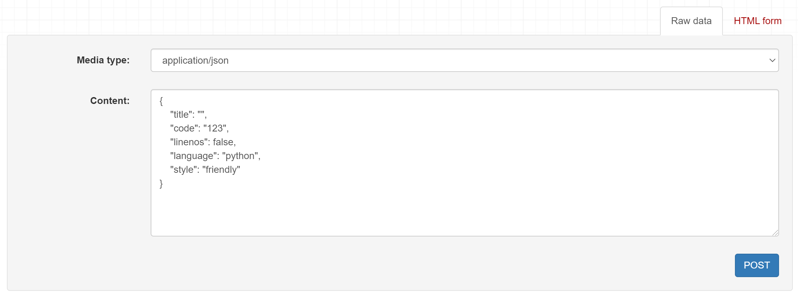
会发现接口报错了：
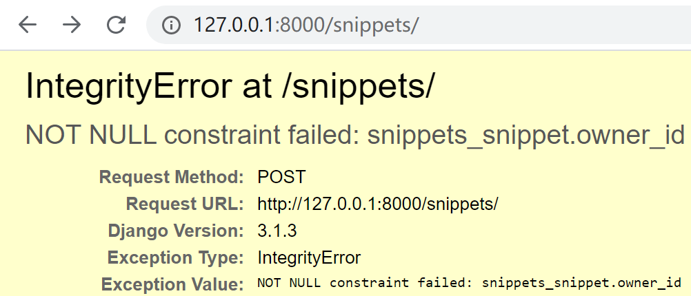
owner_id 不能为空？因为前面只给Snippet添加了owner字段，还没有写反序列化更新模型的代码，所以通过请求访问视图，再尝试反序列化的时候，报错了。我们先修改视图SnippetList来修复这个问题：
def perform_create(self, serializer):
serializer.save(owner=self.request.user)
在SnippetList视图中重写perform_create()方法，意思是在保存时，把request.user值赋给owner字段。perform_create()方法的源码是：
class CreateModelMixin:
"""
Create a model instance.
"""
def create(self, request, *args, **kwargs):
serializer = self.get_serializer(data=request.data)
serializer.is_valid(raise_exception=True)
self.perform_create(serializer)
headers = self.get_success_headers(serializer.data)
return Response(serializer.data, status=status.HTTP_201_CREATED, headers=headers)
def perform_create(self, serializer):
serializer.save()
再修改snippets/serializers.py，添加owner字段，支持序列化：
class SnippetSerializer(serializers.ModelSerializer):
# ReadOnlyField表示只能序列化为JSON，不能反序列化更新模型
# 也可以改成CharField(read_only=True)
owner = serializers.ReadOnlyField(source='owner.username')
class Meta:
model = Snippet
fields = ['id', 'title', 'code', 'linenos', 'language', 'style', 'owner']
注意 Meta.fields 也要加上
owner哦。
再请求一次：
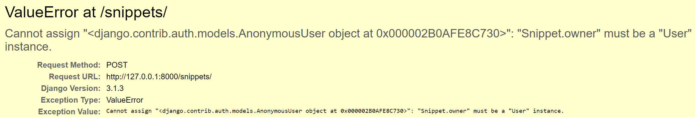
刚才的错误没有了，但是报了个新的错误：Snippet.owner必须是User实例，给它赋值的是AnonymousUser（匿名用户），导致 ValueError 了。这个报错是发生这条代码：
serializer.save(owner=self.request.user)
也就是说请求访问视图后，进行反序列化了，但是反序列化失败了。非常奇怪！我们的请求中并没有用户信息，正常来说在访问视图的时候就该被拦截了。
给视图添加认证
我们需要让 API 更符合常规，让未认证的用户不能执行视图中的代码。DRF 提供了rest_framework .permissions来给视图添加认证：
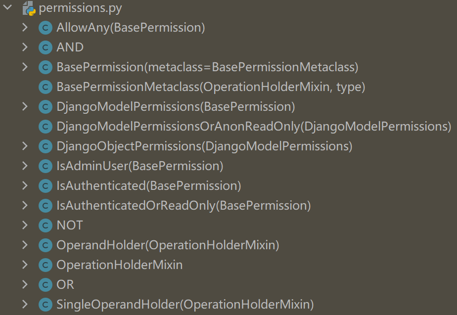
其中IsAuthenticatedOrReadOnly表示只有认证了才能读写，否则只能读。把它添加到SnippetList和SnippetDetail视图中：
from rest_framework import permissions
permission_classes = [permissions.IsAuthenticatedOrReadOnly]
再请求试试，刚才的错误没有了，API 返回的是需要提供用户凭证：
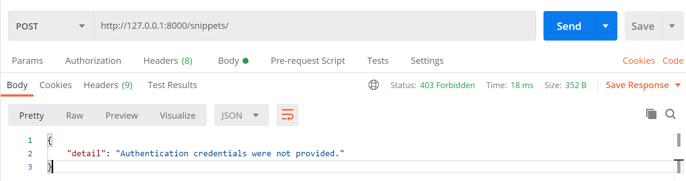
登录视图
如果用浏览器打开http://127.0.0.1:8000/snippets/，会发现只有 GET 方法没有 POST，这是因为需要添加 DRF 登录视图，在tutorial/urls.py中添加rest_framework.urls：
urlpatterns += [
path('api-auth/', include('rest_framework.urls')),
]
api-auth/可以自定义。
刷新页面右上角就会出现Log in按钮，登录后就能 POST 了。
对象级权限
为了更细粒度的控制权限，让用户只能编辑自己创建的snippet，新建snippets/permissions.py：
from rest_framework import permissions
class IsOwnerOrReadOnly(permissions.BasePermission):
"""
Custom permission to only allow owners of an object to edit it.
"""
def has_object_permission(self, request, view, obj):
# Read permissions are allowed to any request,
# so we'll always allow GET, HEAD or OPTIONS requests.
if request.method in permissions.SAFE_METHODS:
return True
# Write permissions are only allowed to the owner of the snippet.
return obj.owner == request.user
新增IsOwnerOrReadOnly权限，继承了permissions.BasePermission，重写了has_object_permission()方法。接着在snippets/views.py中给SnippetDetail加上：
from snippets.permissions import IsOwnerOrReadOnly
permission_classes = [permissions.IsAuthenticatedOrReadOnly,
IsOwnerOrReadOnly]
试下访问其他用户创建的snippet，发现只能查看：
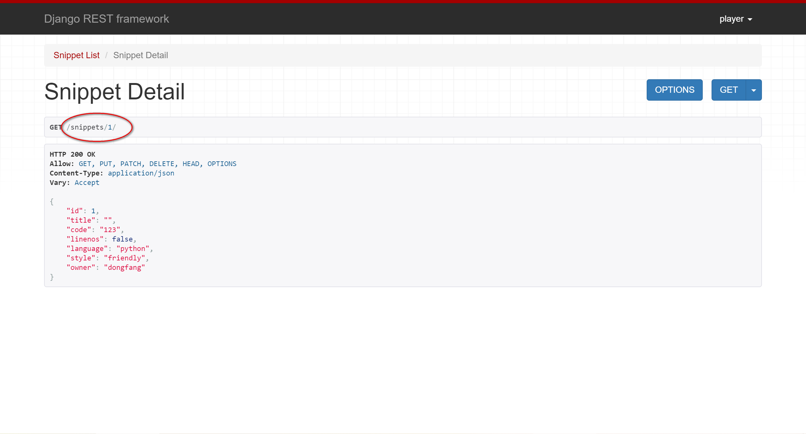
访问自己创建的snippet，可以修改和删除：
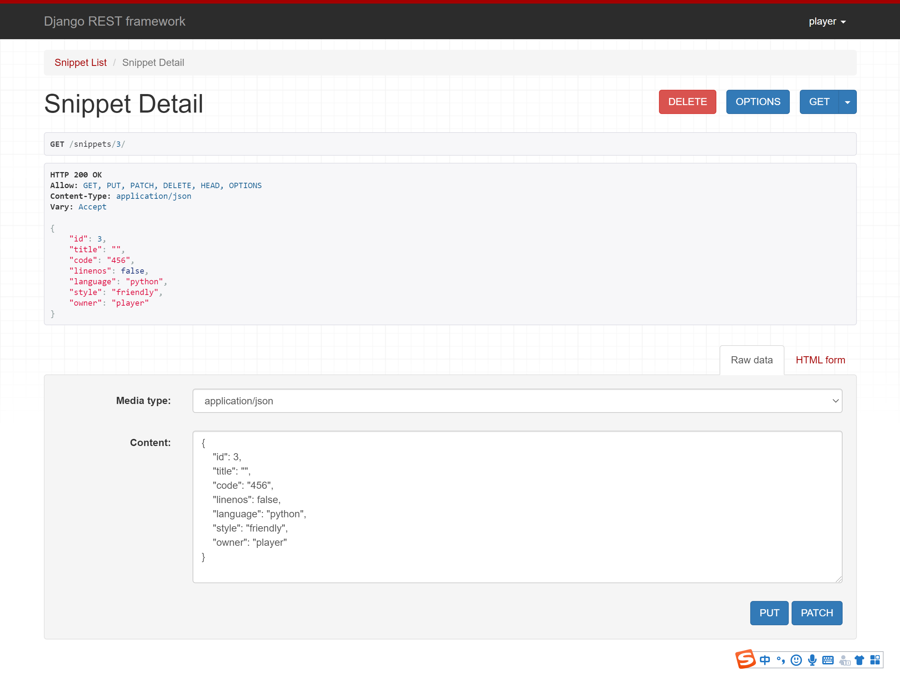
自定义权限
以上是官网的示例，我在 Postman 测试了下，发现超管 dongfanger 可以创建snippet：
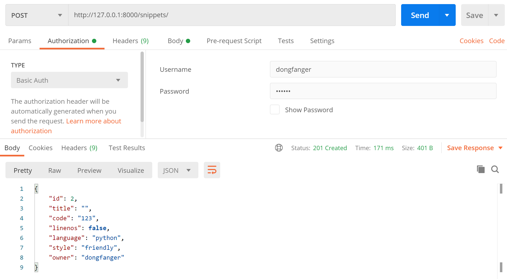
普通用户 player 也可以创建snippet：
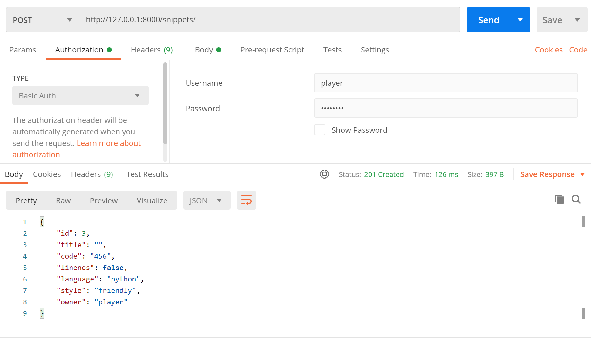
我想让普通用户不能创建，只能超管创建。仿照官网示例，在snippets/permissions.py中添加IsAdminOrReadOnly：
class IsAdminOrReadOnly(permissions.BasePermission):
def has_permission(self, request, view):
return request.user.is_superuser
接着给SnippetList加上：
permission_classes = [permissions.IsAuthenticatedOrReadOnly,
IsAdminOrReadOnly]
用普通用户尝试创建，提示没有权限：
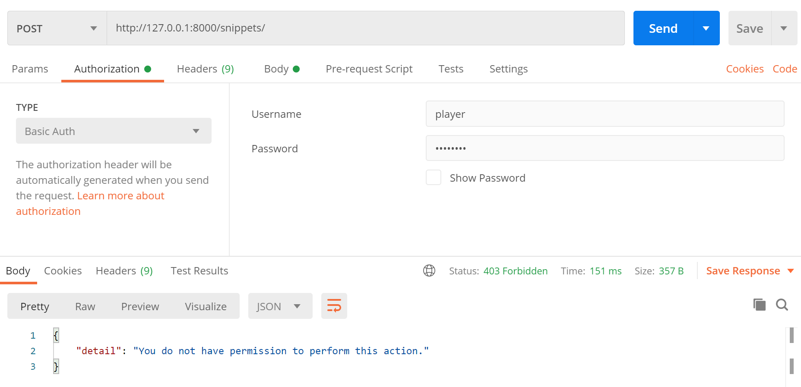
用超级管理员尝试创建，成功：
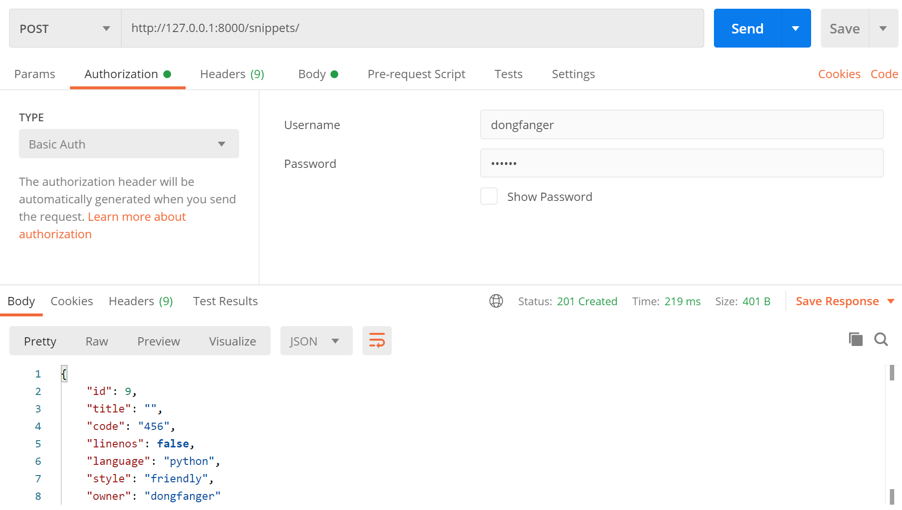
其他认证方式
本文使用的认证方式是默认的SessionAuthentication和BasicAuthentication，只要数据库的用户名、密码和请求中的用户凭证（用户名、密码）匹配上了，就认为认证成功。如果要实现 token 或 jwt 认证，需要使用到rest_framework.authentication：
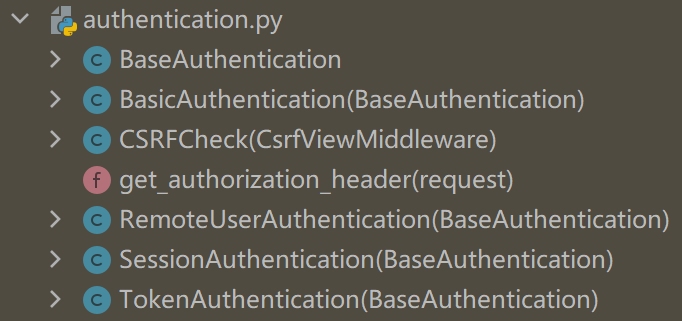
或rest_framework_jwt.authentication：
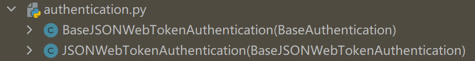
pip install djangorestframework-jwt
这一部分内容官网教程中并没有提及，等我们把教程学完了，以后再找时间来介绍。
小结
DRF 实现认证和权限的关键在于新增permissions.py模块，编写 class，继承permissions.BasePermission，重写has_permission()或has_object_permission()方法，再添加 class 到类视图的permission_classes中。这块的内容比 Django 的认证系统那套简洁，但是有点混淆，另外我之前参照网上实现了一版 JWT，也有点不一样。看来还得写篇对比的文章才行。
参考资料：
https://www.django-rest-framework.org/tutorial/4-authentication-and-permissions/